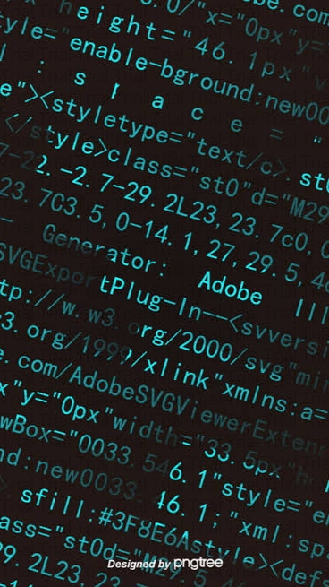

A programming language is a formal language comprising a set of strings that produce various kinds of machine code output. Programming languages are one kind of computer language, and are used in computer programming to implement algorithms. Most programming languages consist of instructions for computers. There are programmable machines that use a set of specific instructions, rather than general programming languages. Since the early 1800s, programs have been used to direct the behavior of machines such as Jacquard looms, music boxes and player pianos. The programs for these machines (such as a player piano's scrolls) did not produce different behavior in response to different inputs or conditions. Thousands of different programming languages have been created, and more are being created every year. Many programming languages are written in an imperative form (i.e., as a sequence of operations to perform) while other languages use the declarative form (i.e. the desired result is specified, not how to achieve it). The description of a programming language is usually split into the two components of syntax (form) and semantics (meaning). Some languages are defined by a specification document (for example, the C programming language is specified by an ISO Standard) while other languages (such as Perl) have a dominant implementation that is treated as a reference. Some languages have both, with the basic language defined by a standard and extensions taken from the dominant implementation being common . A programming language is a notation for writing programs, which are specifications of a computation or algorithm. Some authors restrict the term "programming language" to those languages that can express all possible algorithms. Traits often considered important for what constitutes a programming language include:
- Function and target
- A computer programming language is a language used to write computer programs, which involves a computer performing some kind of computation or algorithm and possibly control external devices such as printers, disk drives, robots, and so on. For example, PostScript programs are frequently created by another program to control a computer printer or display. More generally, a programming language may describe computation on some, possibly abstract, machine. It is generally accepted that a complete specification for a programming language includes a description, possibly idealized, of a machine or processor for that language.[6] In most practical contexts, a programming language involves a computer; consequently, programming languages are usually defined and studied this way. Programming languages differ from natural languages in that natural languages are only used for interaction between people, while programming languages also allow humans to communicate instructions to machines.
- Abstractions
- Programming languages usually contain abstractions for defining and manipulating data structures or controlling the flow of execution. The practical necessity that a programming language support adequate abstractions is expressed by the abstraction principle. This principle is sometimes formulated as a recommendation to the programmer to make proper use of such abstractions .
- Expressive power
- The theory of computation classifies languages by the computations they are capable of expressing. All Turing-complete languages can implement the same set of algorithms. ANSI/ISO SQL-92 and Charity are examples of languages that are not Turing complete, yet are often called programming languages. Markup languages like XML, HTML, or troff, which define structured data, are not usually considered programming languages. Programming languages may, however, share the syntax with markup languages if a computational semantics is defined. XSLT, for example, is a Turing complete language entirely using XML syntax. Moreover, LaTeX, which is mostly used for structuring documents, also contains a Turing complete subset. The term computer language is sometimes used interchangeably with programming language. However, the usage of both terms varies among authors, including the exact scope of each. One usage describes programming languages as a subset of computer languages. Similarly, languages used in computing that have a different goal than expressing computer programs are generically designated computer languages. For instance, markup languages are sometimes referred to as computer languages to emphasize that they are not meant to be used for programming Another usage regards programming languages as theoretical constructs for programming abstract machines, and computer languages as the subset thereof that runs on physical computers, which have finite hardware resources. John C. Reynolds emphasizes that formal specification languages are just as much programming languages as are the languages intended for execution. He also argues that textual and even graphical input formats that affect the behavior of a computer are programming languages, despite the fact they are commonly not Turing-complete, and remarks that ignorance of programming language concepts is the reason for many flaws in input formats.